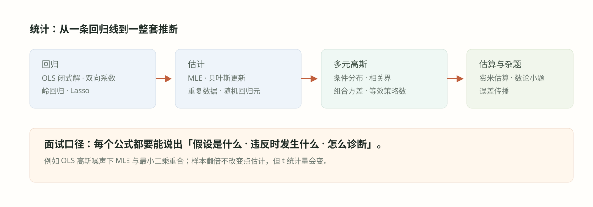

#030. 统计五：杂题与费米估算

#学习目标：答案必须带着误差棒
量化面试的估算题不考「你知不知道那个数」，考的是得出数的过程是否可信、你对自己答案的不确定性是否有感觉。一道「估 \(2^{40}\)」可以答 \(10^{12}\) 了事，也可以答「\(10^{12}\)，但这个估算每替换一次引入 2.34% 的低估、四次复合约 9%，超出你给的 5% 容差，修正后应为 \(1.1\times10^{12}\)」——后者的分数是前者的数倍。本章第一条主线就是把这套纪律写成可复用的流程：分解、逐项上下界、误差传播、独立路径交叉验证。
第二条主线是「杂题」：源题库统计部分剩余的题目分布在数论（立方尾数）、流式算法（均匀抽样）、经典期望（均匀和超 1、绳环计数、虫子下落）、信息编码（两次查询定多项式）与算法贪心（喷泉覆盖）上。它们看似互不相干，其实共享同一套动作：找不变量（同余类、抽样概率、穿越等价）、写递推（成环概率、体积归纳）、验证小情形。每道例题都按四段式走，小情形验证一律保留。
第三条主线是开放决策题（一堆买卖建议怎么办）：它没有唯一答案，但有唯一合格的答案结构——期望、风险、相关性三维建模范式加上容量成本与样本外验证。这个结构在 029 章的等效策略数与 025 章的下注尺度处都已埋好零件，本章负责组装。
把大数拆成可锚定的小因子，每项先给「十的幂」量级再收窄；乘积的相对误差近似相加。
同余类、抽样概率、穿越等价、成环概率——杂题的通用钥匙是找到「不随过程改变的量」。
期望（值不值）、风险（亏不亏得起）、相关（是不是同一件事说了三遍）——加上成本与验证。
#知识点一：费米估算的方法论
费米估算（Fermi estimation）的经典场景是「芝加哥有多少钢琴调音师」：不查任何资料，靠分解与锚点把数量级钉住。流程四步：
第一步 · 分解：把目标量写成少数几个因子的乘积（人口 × 持琴率 × 调琴频率 ÷ 人均产能），每个因子都能锚定到生活经验。
第二步 · 上下界夹逼：每项先给「肯定不低于、肯定不高于」的两个十的幂，答案落在区间内再取几何平均——比单点猜测稳。
第三步 · 误差传播：乘积的相对误差近似相加：\((1+\varepsilon_1)(1+\varepsilon_2)\cdots\approx 1+\sum\varepsilon_i\)（\(\varepsilon\) 小时）。心里给每个因子的误差记账，总误差就是账面之和——这就是「5% 容差是否达标」的判定方法。
第四步 · 交叉验证：换一条分解路径重算一遍，两条路在同一量级会合才算过关；能做端点 sanity（代入极端情形看是否退化）就做。
误差传播公式值得展开半行：若第 \(i\) 个因子被低估为真值的 \(1-\delta_i\)，乘积低估约为 \(1-\sum\delta_i\)。「\(2^{10}\) 用 \(10^3\) 顶替」这类操作的单点误差是 \(\delta=1-1000/1024\approx2.34\%\)，顶替四次账面累计 \(4\times2.34\%\approx9.4\%\)——例题 2 会看到这正是 \(2^{40}\) 估算超差的全部原因。
费米题的及格线是量级（差十倍以内），优秀线是自带误差棒：说出「我估 \(10^{12}\)，不确定度主要来自某因子，约 ±10%」。面试官真正想听的是你对哪一步最没把握的元认知，而不是最终数字的第四位有效数字。
#知识点二：决策题的答题框架
「你收到一堆买卖建议，怎么办？」这类开放题（源题 S3）的答案结构比结论重要。标准五段：
第一段 · 目标函数：先问清优化什么——期望收益、夏普、还是回撤约束下的收益？目标不同，「建议」的用法完全不同。
第二段 · 单条建议建模：每条建议视作一个信号：估计其期望超额收益、波动率（决定值不值得做）；样本少的用收缩估计压极端值。
第三段 · 相关性维度：估计建议之间的相关矩阵，算等效独立信号数 \(N_{\text{eff}}\)（029 章例题 6 的工具）——一百条相关 0.9 的建议本质是一条；聚类后每簇只留代表，避免同一逻辑重复下注。
第四段 · 组合与下注尺度：按逆方差或风险平价分配权重（028 章例题 4、029 章例题 10 的工具），单笔尺度服从凯利式约束（025 章），并扣除交易成本与容量限制——期望优势盖不过成本的建议直接丢弃。
第五段 · 验证与迭代：样本外回测、滚动样本内更新参数、纸面交易一段时间再上实盘（040 章展开回测纪律）。
读法：这套框架的本质是把「很多建议」变成一个带相关结构的收益预测问题，然后用统计分册全部工具流水线处理。面试时按段落口头输出，每段点名工具即可，不必展开公式。
#例题详解 I：估算与误差控制
例题 1（源题 S7）：用二项实验估计 \(N(0,\sigma^2)\) 落在 \(\pm2\sigma\) 内的概率。怎么估、误差多大？
建模。抽 \(n\) 个 iid 样本 \(Z_i\sim N(0,\sigma^2)\)，令指示变量 \(I_i=\mathbf{1}\{|Z_i|\le2\sigma\}\)（尺度无关，取 \(\sigma=1\) 即可），则 \(I_i\overset{\text{iid}}{\sim}\mathrm{Bernoulli}(p)\)、\(p=P(|Z|\le2)\)，估计量取 \(\hat p=\frac1n\sum I_i\)——一个标准的蒙特卡洛二项实验。
推导。真值 \(p=2\Phi(2)-1\approx0.9545\)。估计量性质：\(\hat p\) 无偏，标准误（蒙特卡洛标准误）为
代入 \(n=10^4\)：\(\mathrm{SE}\approx0.00208\)，95% 置信区间 \(\hat p\pm1.96\times0.00208\approx\hat p\pm0.41\%\)。要 ±1% 精度（95% 置信）：\(n=1.96^2p(1-p)/0.01^2\approx1668\)；用最保守的 \(p(1-p)=\tfrac14\) 预算则是 \(n\approx9604\)。二项方差在 \(p\) 接近 1 时天然变小，这是本题值得点出的结构。
检验。覆盖核对：\(\pm0.0041\) 恰为 \(1.96\times\mathrm{SE}\)，是以真值 0.9545 为中心的 95% 置信区间半宽度；量级核对：精度要求每提高十倍，样本量乘一百（\(1/\sqrt n\) 法则）。另指出替代路径——直接查正态表或用 \(\mathrm{erf}\) 计算无需采样，本题考的是「给采样估计配误差棒」的方法论，与 035 章的蒙特卡洛实现衔接。
面试怎么讲。三句话：指示变量化成伯努利；标准误 \(\sqrt{p(1-p)/n}\)；报出 \(n=10^4\) 时 ±0.41%、要 ±1% 约需 1700 个样本。最后强调「估计必须配误差棒，否则无法判断 0.95 与 0.96 的差异是真是假」。
例题 2（源题 S39 与 S46，同题）：估算 \(2^{40}\)。如果你的估算是 \(10^{12}\)，如何检验它在 5% 误差范围内？（结论：它不在。）
建模。锚点是 \(2^{10}=1024\approx10^3\)。\(2^{40}=(2^{10})^4\)，于是估算路径与误差都由这个替换决定。
推导。朴素估算：\(2^{40}\approx(10^3)^4=10^{12}\)。误差记账：每次替换把 \(1024\) 写成 \(1000\)，低估比例 \(\delta=24/1024\approx2.34\%\)；四次复合（乘法误差传播）：
（二项展开 \((1+\varepsilon)^4\approx1+4\varepsilon+6\varepsilon^2\) 足够。）所以真值 \(\approx1.0995\times10^{12}\)，朴素答案 \(10^{12}\) 相对真值低估约 \((1.0995-1)/1.0995\approx9.0\%\)——超出 5% 容差，必须修正为 \(1.1\times10^{12}\)（修正后误差约 0.001%）。交叉验证走第二条路：\(2^{20}=1{,}048{,}576\approx1.0486\times10^6\)，平方得 \((1.0486)^2\times10^{12}\approx1.0995\times10^{12}\)——两条独立路径会合，通过。
| 路径 | 计算 | 结果 | 相对真值误差 |
|---|---|---|---|
| 朴素 \(2^{10}\to10^3\) | \((10^3)^4\) | \(1.0\times10^{12}\) | 约 −9.0%，超差 |
| 修正 \(1.024^4\)（二项展开） | \(10^{12}\times1.0995\) | \(1.0995\times10^{12}\) | 小于 0.01% |
| 交叉验证 \(2^{20}\) 平方 | \((1.0486\times10^6)^2\) | \(\approx1.0995\times10^{12}\) | 与上一致 |
检验。「5% 怎么验」的一般方法就在表里：给每个近似步骤记相对误差账，乘法复合时相加（\(4\times2.34\%\approx9.4\%\)），账面超容差即判定朴素答案不合格；再用独立分解路径复核。顺带记住锚点 \(\log_{10}2\approx0.301\)：\(40\times0.301=12.04\)，同样给出 \(10^{12.04}\approx1.1\times10^{12}\)。
面试怎么讲。先给朴素答案并当场宣布它的误差上界（9% 量级），主动判它不及格，再给修正值 1.1 万亿与交叉验证。这题的满分动作是自检环节——它就是题目要求的那一半。
#例题详解 II：数论、采样与期望
例题 3（源题 S17）：1 到 \(10^{12}\) 之间有多少个整数，其立方以 11 结尾？
建模。「立方以 11 结尾」即 \(n^3\equiv11\pmod{100}\)。立方 mod 100 的结构只依赖 \(n\bmod 100\)，所以先解同余，再数落在区间里的同余类成员。
推导。个位：\(n^3\) 个位为 1，只有 \(n\) 个位为 1 可达（个位立方的个位逐一检验）。设 \(n=10k+1\)，展开：
（第二步两边约去公因子 10，模相应缩小为 10。）故 \(n\equiv71\pmod{100}\)，每个百数段恰一个解。个数：\(71,171,\dots\)，不超过 \(10^{12}\) 的成员数 \(=\bigl\lfloor(10^{12}-71)/100\bigr\rfloor+1=10^{10}\)。
检验。直接验算 \(71^3=357{,}911\)——尾数正是 11；再验 \(171^3=5{,}000{,}211\)，同样以 11 结尾（同余类平移不变）。mod 4 副检：\(11\equiv3\pmod4\)，奇数立方 mod 4 等于自身，\(71\equiv3\pmod4\) 一致。
面试怎么讲。口诀式推进：个位定 1 → 十位解同余 → 唯一类 71 → 区间计数 \(10^{10}\)。强调「同余类每 100 个数出现一次」这一不变量，验算 \(71^3\) 收尾。
例题 4（源题 S18）：给你一个长度未知的单向链表，只能从头到尾遍历一次。如何等概率地随机抽出一个元素？
建模。流式均匀抽样，标准解法是蓄水池抽样（reservoir sampling）的容量 1 版本：维护一个「当前中选者」，来一个新元素就按规则决定是否替换。
推导。算法：第 1 个元素必选中；看到第 \(i\) 个元素（\(i\ge2\)）时，以 \(\tfrac1i\) 用它替换中选者，否则保留。归纳证明均匀性：设前 \(i\) 个元素各自中选概率为 \(\tfrac1i\)。到第 \(i+1\) 个时：新元素以 \(\tfrac1{i+1}\) 直接中选；任一旧元素以 \(\tfrac{i}{i+1}\times\tfrac1i=\tfrac1{i+1}\) 保住席位——两者合成，\(i+1\) 个元素各 \(\tfrac1{i+1}\)，归纳成立，终点即全长 \(n\) 时各 \(\tfrac1n\)。
检验。小情形手工核对：\(n=2\) 时第 2 个以 1/2 替换，两者各 1/2；\(n=3\) 时元素 1 存活概率 \(\tfrac12\times\tfrac23=\tfrac13\) ✓。期望替换次数 \(\sum_{i\ge2}\tfrac1i\approx\ln n\)，一遍扫描、\(O(1)\) 额外空间。
面试怎么讲。先说约束（未知长度、单遍历）逼出在线算法；给替换规则与归纳证明；主动推广容量 \(k\) 的版本（第 \(i\) 个元素以 \(k/i\) 入池、随机踢掉一个旧成员）。实现细节与变体在 036 章的数据结构设计题里展开。
例题 5（源题 S19）：不断抽取 \([0,1]\) 上的均匀随机数并累加，和第一次超过 1 时停止。期望抽取多少次？
建模。记抽取次数为 \(N\)，用尾部概率求和 \(\mathbb{E}[N]=\sum_{n\ge0}P(N\gt n)\)；而 \(P(N\gt n)\) 就是「前 \(n\) 个均匀数之和不超过 1」的概率。
推导。记 \(V_n=P(U_1+\cdots+U_n\le1)\)：这是 \(n\) 维单位单纯形的体积。递推：给定 \(U_n=x\)，前 \(n-1\) 个数须落在和不超过 \(1-x\) 的单纯形里，故
检验。小情形核对：\(P(N=1)=P(U_1\gt1)=0\)（单个均匀数超不过 1）；\(P(N=2)=1-V_2=\tfrac12\)；\(P(N=3)=V_2-V_3=\tfrac12-\tfrac16=\tfrac13\)——分布 \((0,\tfrac12,\tfrac13,\tfrac18,\dots)\) 加总为 1，期望 \(2\times\tfrac12+3\times\tfrac13+\dots=e\) ✓。完整推导与仿真的更多细节见 021 章。
面试怎么讲。关键一步是把期望写成 \(\sum P(N\gt n)\) 并认出单纯形体积 \(1/n!\)；答案 \(e\) 报出后补一句「和超过任意 \(x\le1\) 的期望步数同理可算」，展示方法而非巧合。
例题 6（源题 S38）：1 米长的线段上均匀放 \(n\) 只虫，每只随机（各 50%）向左或右以 1 米/秒爬行，相遇即互相反弹换向，到达端点即掉落。期望多久线段清空？
建模。关键不变量：两只相同的虫碰撞后互换方向，等价于两只互相穿过、只交换「身份标签」。于是任意时刻的实际构型，与「\(n\) 只互不作用的幽灵各自直线爬行」完全一致，清空时间等于最远的幽灵掉落时间。
推导。第 \(i\) 只幽灵到其端点的距离 \(d_i\)：以 1/2 概率向左（距离 \(X_i\)）、1/2 向右（距离 \(1-X_i\)），\(X_i\sim U[0,1]\)，两种情形都服从 \(U[0,1]\) 且相互独立——所以 \(d_i\) 是 \(n\) 个 iid \(U[0,1]\)。清空时间 \(T=\max_i d_i\)（速度 1 米/秒，时间=距离）：
（\(n\) 个 iid 均匀的最大值期望是 \(n/(n+1)\)，密度 \(nx^{n-1}\) 积分即得。）
检验。端点核对：\(n=1\) 给 \(\tfrac12\)（单虫平均爬半米）✓；\(n\to\infty\) 趋于 1 秒——虫再多，最晚掉落也不超过 1 秒（最远端点距离至多 1 米）。单调性核对：虫越多清空越晚，\(n/(n+1)\) 单调上升 ✓。最大值期望的更多练习见 021 章。
面试怎么讲。先讲穿隧等价（一句「反弹=交换标签」），把问题化为 iid 均匀的最大值，报 \(n/(n+1)\)；用 \(n=1\) 与 \(n\to\infty\) 两个端点自证。没有穿隧这一步，任何直接模拟两人碰撞的做法都会陷入细节泥潭。
#例题详解 III：绳环、多项式、决策与贪心
例题 7（源题 S40）：\(N\) 根绳，共 \(2N\) 个绳头。每步随机取两个头：若属同一根绳则打成一个环收走，否则结成一根更长的绳。直到全部收走，期望得到多少个环？它的渐进行为是什么？
建模。递归地看：当桌上有 \(k\) 根绳（\(2k\) 个头）时，任取一个头，它与其余 \(2k-1\) 个头配对等可能；无论哪种结局，绳数都减一（成环收走一根，或两根并一根）。
推导。设 \(f(k)\) 为 \(k\) 根绳起手的期望环数。取定一头：以 \(\tfrac1{2k-1}\) 配到同绳另一头——成 1 环，剩 \(k-1\) 根；以 \(\tfrac{2k-2}{2k-1}\) 配到别绳——两绳合一，无环，剩 \(k-1\) 根。两种情形后续期望都是 \(f(k-1)\)：
解递推并改写为调和数：
渐进行为：对数增长，\(\sim\tfrac12\ln N\)——绳翻十倍，环数只加 \(\ln 10/2\approx1.15\) 个。
检验。枚举核对：\(N=1\) 必成 1 环，\(f(1)=1\) ✓；\(N=2\) 时 4 个头的 3 种完全配对中，同绳自配的那种（1 种）给 2 环、其余 2 种各给 1 环（两绳连成一圈），期望 \((2+1+1)/3=\tfrac43=f(2)=1+\tfrac13\) ✓。调和数式核对：\(H_4-\tfrac12H_2=2.0833-0.75=\tfrac43\) ✓。
面试怎么讲。递推三件套：状态（绳数）、一步转移概率（\(\tfrac1{2k-1}\) 成环）、递推式；报 \(H_{2N}-\tfrac12H_N\sim\tfrac12\ln N\)；用 \(N=2\) 的枚举当场验证。易错点：成环与合并都会让绳数减一，所以递推只降一层——别写成 \(f(k-2)\)。
例题 8（源题 S42）：黑盒里有一个系数全为正整数、次数未知的单项式和多项式 \(p(x)\)。允许查询两次（给出 \(x\)，返回 \(p(x)\)）。不能依赖代数插值理论，如何确定所有系数？
建模。插值路线需要「次数 + 1」个点，两次查询必然欠定——除非选的查询点本身携带编码。核心技巧：把系数当成某个大进制下的「数字」，让一次求值把它们全部读出来。障碍是不知道系数上界，所以第一次查询用来造一个足够大的基数。
推导。两步方案：第一步查 \(q_1=p(1)=\sum_k a_k\)——系数全正，故每个 \(a_k\le q_1\)。第二步查 \(q_2=p(q_1+1)\)。记 \(B=q_1+1\)：
进制表示的唯一性（每位数字严格小于 \(B\)）保证系数被无损编码；最高非零位的位置即次数 \(d\)。
检验。数值走一遍：\(p(x)=3+5x+2x^2\)。\(p(1)=10\)，\(B=11\)，\(p(11)=3+55+242=300\)；300 的 11 进制分解 \(=2\times121+5\times11+3\)，读出 \((3,5,2)\)——系数、次数全部复原 ✓。
面试怎么讲。先讲清为什么朴素插值不行（两次点值欠定），再给「自造基数」的两步：\(p(1)\) 定上界、\(p(\text{上界}+1)\) 做进制解码，配数值例子。若面试官追问「系数不是整数呢」：正实系数无法用进制编码，退路是数值优化或额外查询——边界诚实交代。另一个理论彩蛋：若允许「精确读取实数值」，单次 \(p(\pi)\) 因 \(\pi\) 的超越性已唯一确定整系数多项式（无非零整系数多项式在 \(\pi\) 取零），只是不给出构造性的解码算法——两查询的进制方案才是可执行的。
例题 9（源题 S3）：你收到一大堆买进卖出的建议。怎么决定怎么做？
建模。套用知识点二的五段框架，把「一堆建议」变成一个带相关结构的组合问题。
推导（作答口径）。目标先行：确认优化的是期望收益还是风险调整收益（决定后面所有权重语言）。单条建模：估计每条建议的期望超额与波动，样本小则收缩。相关维度：估相关矩阵、算等效信号数 \(N_{\text{eff}}\)——一堆相关 0.9 的建议只当一条用，聚类去冗余。组合落地：逆方差或风险平价定权重、凯利式约束定尺度、扣除成本与容量，期望优势付不起成本的建议直接弃。验证闭环：样本外回测与滚动更新，防「建议本身过拟合」。
检验。反例自检：若所有建议其实都是「利率上行」同一逻辑的马甲，零相关假设会严重高估分散、超配该因子——所以相关性一段不可跳过；若建议期望全为零但方差为正，扣完成本后期望为负，最优动作是「全不做」——框架允许空答案也是合理的输出。
面试怎么讲。按五段口头走，每段一个工具名（收缩、\(N_{\text{eff}}\)、风险平价、凯利、样本外）；结尾主动说「最重要的单一动作是查相关性——它决定这堆建议到底是情报还是回声」。开放题的评分在结构完整性，工具细节点到即可。
例题 10（源题 S35）：花园里 1 到 \(n\)（\(n\approx10^5\)）各位置有一座喷泉，喷泉 \(i\) 的喷洒半径为 \(r_i\)（\(1\le r_i\le100\)）。至少开多少座喷泉才能浇到花园所有位置？
建模。喷泉 \(i\) 覆盖区间 \([i-r_i,\ i+r_i]\)，问题是「用最少的给定区间覆盖 \([1,n]\)」——经典区间覆盖贪心。
推导。贪心规则：维护已覆盖右端点 \(\text{cur}\)（初始为 0，覆盖到 \([1,\text{cur}]\)）；每轮在所有满足「左端点 \(\le\text{cur}+1\)」（即能接上现有覆盖）的喷泉中，选右端点最远者开启，更新 \(\text{cur}\)；直到 \(\text{cur}\ge n\)。正确性（交换论证，exchange argument）：设最优解第一座喷泉不是贪心所选，则用它替换为贪心那座不会让后续覆盖变差（右端点更远），归纳可知贪心解与最优解同规模。复杂度：按位置顺序扫描、每座喷泉入桶一次，\(O(n+\max r)\) 或排序后 \(O(n\log n)\)。
检验。小情形核对：\(n=3\)、\(r=[1,1,1]\)：区间 \([0,2],[1,3],[2,4]\)，贪心先开 2 号（覆盖 \([1,3]\)），一步完成 ✓（开 1 号则还需第二座）。可达性核对：\(r_i\ge1\) 保证位置 \(i\) 至少能被自己浇到，贪心每步至少推进 1，必然终止。
面试怎么讲。先把「点覆盖」翻译成「区间覆盖」，再说贪心规则与交换 argument，报复杂度；主动提「若 \(r\) 很大则退化为跳跃游戏式线性扫」。这类区间扫描思想在编程分册（如 033 章的滑动窗口）会以实现题形式重现。
统计部分还有一道纯数据结构题（源题 S6：两个只能尾进头出的容器，如何组合出指定操作序列）已在 002 章随栈与队列讲过，此处不再重复。
#误区与边界
没有误差棒的估算等于没有估算。合格输出是「值 + 主要误差来源 + 量级判断」三件套；面试官会故意追问「如果要求 5% 以内呢」，答案永远是回到误差传播账本，而不是换一个更吉利的数字。
例题 1 的估计量自带 \(\sqrt{p(1-p)/n}\) 的标准误；比较两个仿真结果而不报采样误差，会把噪声读成信号——这与 027 章「训练误差不代表泛化」同源。
状态是「当前绳数 \(k\)」，一步转移里成环与合并都让 \(k\) 减一，概率 \(\tfrac1{2k-1}\) 用的是「其余 \(2k-1\) 个头等可能」；写成 \(\tfrac1{2k}\) 或降两层是最常见的手误，用 \(N=2\) 枚举（\(\tfrac43\)）一秒识破。
进制编码成立的前提是每位数字严格小于基数——这就是为什么先查 \(p(1)\) 造上界、再查 \(p(\text{上界}+1)\)。直接查 \(p(10)\) 而系数可以超过 9 时，进位会毁掉解码。
区间覆盖贪心依赖「区间由左端点排序后右端点单调可用」的结构；若改问「覆盖 90% 的位置最少几座」或带权重，贪心未必最优，需 DP 或近似算法——主动说明边界比背结论可信。
#检查清单
- 我能按「分解—上下界—误差传播—交叉验证」四步完成费米估算，并给答案配误差棒与主要误差来源。
- 我能推导 \(2^{40}\approx1.0995\times10^{12}\)，说明朴素 \(10^{12}\) 低估约 9% 的账本，并用 \(2^{20}\) 平方做第二条路径复核。
- 我能写出蒙特卡洛比例估计的标准误 \(\sqrt{p(1-p)/n}\)，算出 \(n=10^4\) 时约 ±0.41%、±1% 需要约 1700 个样本。
- 我能解同余 \(n^3\equiv11\pmod{100}\) 得唯一类 71，并数出 \(10^{12}\) 内恰有 \(10^{10}\) 个（含 \(71^3=357{,}911\) 验算）。
- 我能在未知长度链表上单遍历均匀抽样（蓄水池，归纳证明 \(\tfrac1n\)），并推广到容量 \(k\)。
- 我能用单纯形体积 \(1/n!\) 推出均匀和超 1 的期望抽取次数 \(e\)，并用虫子穿隧等价推出清空时间 \(n/(n+1)\)。
- 我能推导随机系绳的期望环数 \(H_{2N}-\tfrac12H_N\sim\tfrac12\ln N\)，并用 \(N=2\) 的枚举验证 \(\tfrac43\)。
- 我能用两次查询（\(p(1)\) 与 \(p(p(1)+1)\)）的进制编码复原正整系数多项式，并说明解码条件与超越数彩蛋。
- 面对买卖建议堆，我能按「目标—单条建模—相关性—组合尺度—验证」五段输出，并指出相关性与成本是两大守门员。
- 我能把喷泉覆盖化为区间覆盖贪心，讲清交换 argument 与复杂度，并说明它失效的变式边界。